特服变更-GPRS
一、业务介绍：
GPRS是通用分组无线业务（General Packet Radio Service）的英文简称，是在现有的GSM系统上发展出来的一种新的分组数据承载技术。具有“永远在线”、“自如切换”、“高速传送”等优点，通过GPRS网络可以帮助客户实现无线上网的需求。
二、注意事项：
1、使用GPRS上网就需要先开通GPRS功能，客户开户时默认开通GPRS功能。使用GPRS功能上网会产生数据流量。
2、GPRS功能开通是指手机号码具备了使用GPRS的能力，GPRS套餐是指针对GPRS流量进行优惠的套餐。客户取消了GPRS套餐不会取消GPRS功能，仍可使用GPRS功能进行上网但不再享受优惠；取消GPRS功能也不会取消GPRS套餐，建议您取消GPRS功能前先取消GPRS套餐。
3、黑龙江移动GPRS基础费率：0.005元/KB，实行月使用费500元封顶。
1KB=1024B，1MB=1024KB，1G=1024M即客户在500元封顶值内均按0.005元/K执行，当月流量达15G后，客户需要重新开通GPRS功能方可继续使用，继续使用所产生的费用在500元基础上累加，且无封顶。 本基础费率适用于任何APN节点，包括CMNET/CMWAP和集团客户专有APN节点。 本基础费率不区分省内省外、不包含国际及港澳台漫游资费GPRS资费。
4、不足1分钱的计费原则：因基础费率为0.005元/KB，小于中国银行规定的人民币最小金额。当使用小于人民币1分钱时计算原则：计费系统按0.005元/KB批价，但在计费单条话单流量费尾数不足1分钱的不向客户收取。
5、开通GPRS功能同时需要终端设置正确才可使用（中国移动定制终端出厂时已将GPRS参数设置完毕，客户直接使用即可）。
终端设置：
（1）连接名称：中国移动（GPRS）
（2）数据承载方式：GPRS
（3）接入点名称：cmwap
（4）客户名：无
（5）密码：无
（6）IP地址：10.0.0.172
（7）主页：http://wap.monternet.com
（8）鉴权类型：普通
6、提示客户还可以通过短信营业厅、10086客服热线、网上营业厅办理GPRS业务。
7、申请及取消在同一界面办理，申请时需在办理的“GPRS”业务前点击上“√”，取消时需将“GPRS”业务前的“√”点击掉。
三、相关业务规范
客户凭服务密码办理
四、操作流程图

特服变更-VPMN
一、业务介绍：
即基于计费系统实现的、以集团客户为单位、以虚拟移动专网的形式，给予同一VPMN组的集团客户内部成员之间通话优惠的业务。
二、注意事项
1、如果客户连续六个月不使用VPMN业务（即连续六个月不与本集团内成员通话），系统将自动取消VPMN业务。
2、VPMN资费执行最高优先级。
3、仅限集团客户办理。
4、申请及取消在同一界面办理，申请时需在“VPMN”业务前点击上“√”，取消时需将“VPMN”业务前的“√”点击掉。
三、相关业务规范
客户凭服务密码办理
四、操作流程图
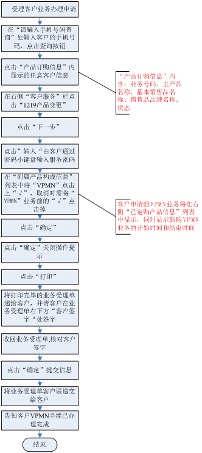
五、操作界面说明 (点击查看详细内容)特服变更-短消息
一、业务介绍：
即SMS，英文全称short message service，是客户通过手机或其他电信终端直接发送或接收的文字或数字信息。点对点短信是指手机终端对手机终端发送的短信。根据客户使用终端类型不同，客户可以发送普通短信和长短信，普通短信最多可包含140个字节，约七十个汉字；客户发送的短信长度超过140字节（70个汉字）为长短信。
二、注意事项：
1、开通短消息功能需手机终端短信中心平台号码设置正确才可使用。短信中心平台号码为：+8613800XYZ500（XYZ为当地长途区号），此号码需全部输入而且仅需要设置一次（注：客户购买的SIM卡已为客户事先设置好了短信中心号码，无需再次设置）。
2、当客户发送的短信长度超过140字节（70个汉字）时，收费标准是“按发送方手机终端分拆的条数进行判断收费”的，与接收方接收条数无关。
3、申请及取消在同一界面办理，申请时需在“短消息”业务前点击上“√”，取消时需将“短消息”业务前的“√”点击掉。
三、相关业务规范
客户凭服务密码办理
四、操作流程图
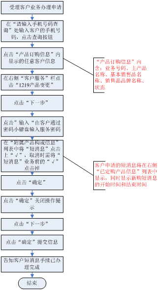
五、操作界面说明 (点击查看详细内容)特服变更-关闭语音
一、业务介绍：
关闭语音功能后，客户将无法进行语音通话。但不影响其他原有的功能，如短信、GPRS等。
二、注意事项：
关闭语音功能及恢复语音功能同一界面办理，关闭语音功能时需在“关闭语音”业务前点击上“√”，恢复语音功能时需将“关闭语音”业务前的“√”点击掉。
三、相关业务规范
需机主本人持有效身份证件 、凭服务密码办理。
四、操作流程图
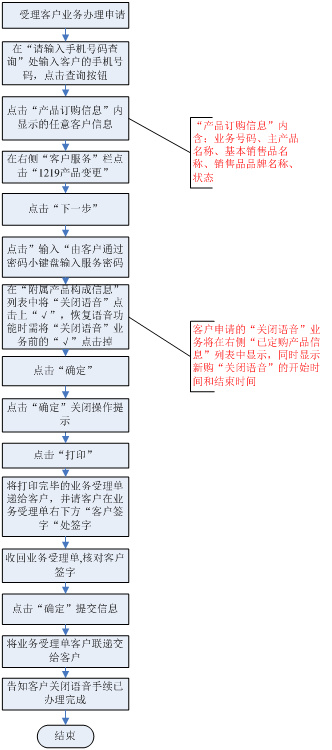
五、操作界面说明 (点击查看详细内容)特服变更-国际（及港澳台）长途
一、业务介绍：
是指客户在国内（不含港澳台）拨打国际及港澳台地区电话的业务。
二、注意事项：
1、业务资费
（1）直接拔打国际及港澳台长途：
1）国际长途费：0.80元／6秒
2）港澳台长途费：0.20元／6秒
3）分时段优惠：每日0：00至7：00，不分工作日节假日（不包括港澳台电话）新疆、西藏自治区优惠时段向后顺延2小时。分时段优惠后的国际及港澳台长途费：0.48元／6秒，实施国际电话分时段优惠的受话国家为：日本、韩国、泰国、新加坡、马来西亚、菲律宾、印度尼西亚、英国、法国、德国、意大利、美国、加拿大、澳大利亚、新西兰。
其它地区（含港、澳、台）和国家不进行分时段优惠。
（2）通过IP方式拔打国际及港澳台长途：
1）拨打香港、澳门、台湾资费标准：1.50元/分钟
2）拨打美国、加拿大（含阿拉斯加和夏威夷、不含其它代码为1的国家和地区）资费标准：2.40元/分钟
3）拨打英国、法国、意大利、德国、新西兰、韩国、日本、澳大利亚、新加坡、马来西亚、泰国、印尼、菲律宾资费标准：3.60元/分钟
4）拨打其它国家和地区资费标准：4.60元/分钟。
2、可向客户推荐12593国际及港澳台长途营销活动（注意营销结束时间）。
3、提示客户可以通过网站、短信、手机上网、客服热线10086等方式办理。
4、申请及取消在同一界面办理，申请时需在“国际长途”业务前点击上“√”，取消时需将“国际长途”业务前的“√”点击掉。
三、相关业务规范
1、通过营业厅办理：
（1）钻、金、银卡客户和重要客户：凭服务密码办理。
（2）实名制客户：持机主有效证件、凭服务密码即可办理。若代办持代办人有效身份证件、机主有效证件、凭服务密码办理。（大庆：在网不足6个月的实名客户在可用预存为500元或以上时可申请办理，绥化：客户要求有1000元当前可用预存款）
（3）单位客户：须持单位介绍信及经办人的有效证件办理。
（4）非实名制客户：非实名制客户在营业厅过户后才可以办理。
2、通过其他电子渠道办理：
（1）钻、金、银卡客户和重要客户：凭服务密码办理。
（2）其它客户在有1000元可用预存款的情况下，凭服务密码办理。
四、操作流程图
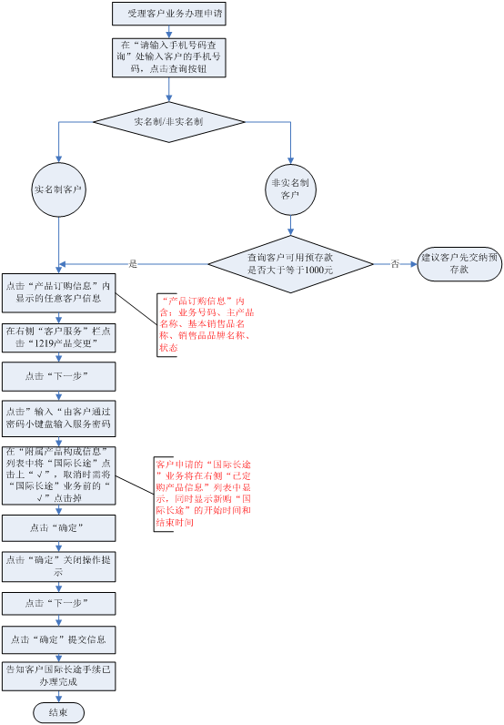
五、操作界面说明 (点击查看详细内容)特服变更-国际（及港澳台）漫游
一、业务介绍：
是指客户在与中国移动签订有自动漫游协议的国家和地区的电信运营商网络覆盖范围内，可以使用国际及港澳台漫游服务。
二、注意事项：
1、钻、金、银卡客户和重要客户免收国际及港澳台漫游预存款，其他客户需有2000元当前可用预存款。
2、如果客户到美洲国家、日本、韩国漫游使用，需要使用不同制式的手机。建议客户更换手机或办理租机业务：客户到美国、加拿大等美洲国家漫游需要使用三频手机（包含900兆、1800兆、1900兆）；客户到日本、韩国漫游可以办理租机业务或使用WCDMA/GSM双模手机即可。
3、租机资费标准为：2010年12月1日起租机押金为1000元，租机费自2010年11月17日下调为：日租10元，月租200元。客户在国际及港澳台漫游结束30天内归还手机的免收租机费用，30天内未归还手机的按10元/天收取或200元/月收取（根据异制租机办理时选择在收费方式决定）。
月租费收取原则：从免费期到期后第一天开始至次月同日的0点为一个月，例如3月5日办理的租机业务且选择月租收费方式，3月5日至4月4日0点期间免租机费，从4月4日开始收取月租费，4月4日0时至5月3日0点为一个月，以后顺延。
4、对所有办理国际及港澳台漫游的客户设置国际及港澳台漫游阀值短信，客户办理国际漫游后系统自动设置500元阀值的阀值短信提示。客户取消国际及港澳台漫游后恢复为默认状态（默认状态催费短信阀值为10元）。
5、国际及港澳台漫游全球通客户默认开通时限为三个月，其它客户默认开通时限为一个月，如客户需要延长时间，可以增加预存款。
6、国际及港澳台漫游剩余预存款应首先建议客户继续使用完毕。在客户主动提出要求退剩余预存款的情况下，可在取消国际及港澳台漫游业务的第二个月到第四个月之间办理退款业务，需客户持机主有效证件原件、原交费发票办理。退款金额根据客户当前预存款情况，最多退2000元（交多少，最多退多少）；原交费发票收回；如退款金额少于2000元，还需给客户打印差额发票。
7、国际及港澳台漫游结束或取消后，自动恢复为国内（不含港澳台）漫游。
8、提示客户可以通过10086热线、网上营业厅、短信营业厅、掌上营业厅办理国际漫游业务。推荐发送短信“国际及港澳台漫游”到10086根据短信提示自助办理。
9、申请及取消在同一界面办理，申请时需在“国际漫游”业务前点击上“√”，取消时需将“国际漫游”业务前的“√”点击掉。
三、相关业务规范
1、钻、金、银卡客户和重要客户状态正常，凭服务密码办理；
2、非VIP客户需有2000元当前可用预存款，凭服务密码、机主有效证件办理
（单位客户须携带单位介绍信及经办人的有效证件办理；代办人持机主有效证件及代办人有效证件办理）。
四、操作流程图
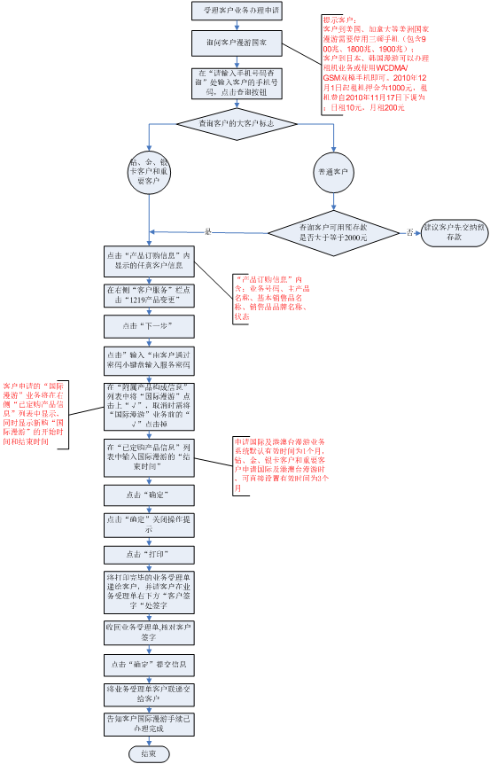
五、操作界面说明 (点击查看详细内容)特服变更-国际前转
一、业务介绍：
办理此业务后，客户可以设置呼叫转移到国际及港澳台电话上。
二、注意事项：
1、需先开通国际（及港澳台）长途业务。
2、申请及取消在同一界面办理，申请时需在“国际前转”业务前点击上“√”，取消时需将“国际前转”业务前的“√”点击掉。
3、国际前转收费标准：
（1）无条件前转：基本呼转费（0.2元/分）+归属地至前转地的国际长途费。（关机/不可及呼转资费原则归无条件类）
（2）有条件前转：（有条件前转包括遇忙呼转及无应答呼转）
漫游地为国内：基本呼转费（0.2元/分）+被叫漫游费+漫游地至前转地的国际长途费
漫游地为国际：基本呼转费（0.2元/分）+（归属地至漫游地+漫游地至前转地）国际长途费
三、相关业务规范
客户凭服务密码办理
四、操作流程图
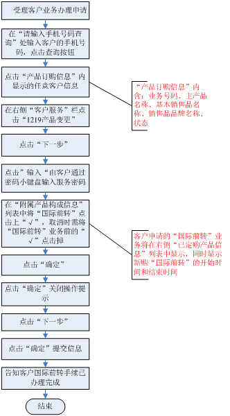
五、操作界面说明 (点击查看详细内容)特服变更-呼叫等待
一、业务介绍：
允许客户在与一方进行通话的过程中再接听或拨打第二个电话，并能实现在两个通话之间进行切换（注：三方不可同时通话）。使用此业务，客户在通话时也不会错失电话，大大提高了通话的灵活性。
二、注意事项：
1、客户入网后，即默认开通呼叫等待功能，在手机上激活呼叫等待功能即可使用。
2、各种手机的呼叫等待通用操作码为：
激活：＊43＃ 按发射键
检查状态：＊＃43＃ 按发射键
取消：＃43＃ 按发射键
3、在使用呼叫等待业务时，每拨打或接听一个电话均按移动电话正常资费标准收费。处于保持状态客户由于占用信道，仍需计算通话时长。
4、呼叫转移与呼叫等待同时使用时，呼叫等待优先。
5、申请及取消在同一界面办理，申请时需在“呼叫等待”业务前点击上“√”，取消时需将“呼叫等待”业务前的“√”点击掉。
三、相关业务规范
客户凭服务密码办理
四、操作流程图
五、操作界面说明 (点击查看详细内容)
特服变更-呼叫转移
一、业务介绍：
客户申请呼叫转移功能后，可以在指定的条件下将来电转移到指定国内（不含港澳台）的电话上，以免电话丢失。呼叫转移分为有条件转移和无条件转移。
1、有条件转移包括3种：
1）无应答转移：设置后，当客户手机接通而无人应答时，来电会自动转移到客户预先设定的电话上。
2）遇忙转移：设置后，当客户正在通话时，如其他人对他进行呼叫，来电会自动转移到客户预先设定的电话上，除无条件转移只能单独使用外，其它转移可同时使用。
3）关机（无信号）转移：设置后，当客户关机或无信号时，来电会自动转移到客户预先设定的电话上。
2、无条件转移：将所有来电转移到客户预先设定的电话上，无条件转移具有最高优先级，当设置此项功能后，有条件转移的三种功能自动失效。
二、注意事项：
1、目前客户开户后即具有呼叫转移功能，，通过此界面可以取消或再次开通呼叫转移功能。具备呼叫转移功能后，如客户想使用呼叫转移业务还需进行呼转方式及呼转号码设置。 客户通过手机即可完成呼转设置。
2、除无条件转移只能单独使用外，其它转移可同时使用。
3、呼叫转移设置变更原则：
（1）单向停机、双向停机、欠费停机、预拆、预销
客户单向停机、双向停机、欠费停机、预拆、预销后，交换机暂停客户的呼叫转移功能，不清除客户的呼转设置。在交费开机、预拆、预销恢复后，恢复客户的呼叫转移功能，原呼转设置仍可继续使用。
（2）关闭语音
客户申请“关闭语音”业务后，交换机暂停客户的呼叫转移功能，同时清除客户的呼叫转移设置。客户取消“关闭语音”业务后，恢复客户的呼叫转移功能，原呼转设置不能继续使用，需重新设置。
（3）报停、挂失
客户报停、挂失后，交换机暂停客户的呼叫转移功能，同时清除客户的呼叫转移设置。客户复话后，恢复客户的呼叫转移功能，原呼转设置不能继续使用，需重新设置。
（4）补卡后原呼转设置不能继续使用，需重新设置。
4、如果您想要呼转的号码是固定电话或小灵通，则必须在该号码前面加上区号。
5、本功能只用于实现来电转移到指定的电话上接听，短信、彩信等不能转移到指定的电话上。
6、呼叫转移与呼叫等待同时使用时，呼叫等待优先。
7、呼叫限制和呼叫转移不可同时使用。
8、业务资费标准：
（1）无条件前转：
基本呼转费+归属地至前转地长途费。关机/不可及呼转计费原则按无条件呼转计。客户呼转到本地号码，只收取基本呼转费，不收取长途费。
（2）有条件前转：
有条件前转包括遇忙呼转及无应答呼转，收费标准为
1）非漫游时
基本呼转费+归属地至前转地的国内长途费，客户呼转到本地号码，只收取基本呼转费，不收取长途费。
2）漫游时
基本呼转费+国内被叫漫游费（0.4元/分钟）+国内主叫漫游费（0.6元/分钟，若客户此次通话占用漫游地至前转地的长途电路，则收取，否则不收取）。
注：基本呼转费为0.20元／分钟，呼转到13800XYZ309，基本呼转费为：收取被叫客户每次0.10元 。
7、申请及取消在同一界面办理，申请时需在“呼叫转移”业务前点击上“√”，取消时需将“呼叫转移”业务前的“√”点击掉。
三、相关业务规范
客户凭服务密码办理
四、操作流程图
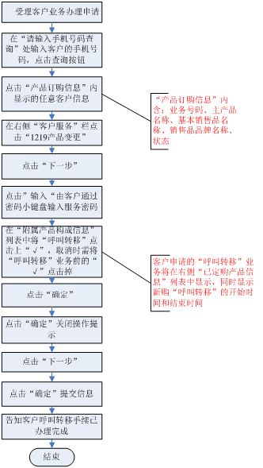
五、操作界面说明 (点击查看详细内容)特服变更-可视电话
一、业务介绍：
可视电话是指客户在呼叫对方手机号码时，采用可视电话呼叫的方式，接通后，双方可以看到对端的影像，同时可以听到对端的声音。可视电话业务在传统的语音通话过程中增加了双方的视频内容，丰富了表现能力，提升了客户体验。
二、注意事项：
1、可视电话使用条件：通话双方均需使用带有可视电话功能的G3终端，均在G3网络中。
2、所有客户（标准神州行除外）默认开通了可视电话业务功能。
3、客户可以通过营业前台或拨打10086取消可视电话业务功能（不建议客户关闭此功能，避免影响客户使用）。
4、申请及取消在同一界面办理，申请时需在“可视电话”业务前点击上“√”，取消时需将“可视电话”业务前的“√”点击掉。
三、相关业务规范
客户凭服务密码办理
四、操作流程图
五、操作界面说明 (点击查看详细内容)
特服变更-来电提醒
一、业务介绍：
来电提醒业务是针对被叫客户开通的业务，如被叫方开通并使用此业务时，当主叫客户拨打被叫客户，呼叫接通后主叫会听到提示音“您拨打的电话办理了来电提醒业务，按任意数字键会将您的号码免费发送到对方手机上。本次通话免费。请挂机”，主叫按任意数字键确认后，被叫将收到一条短信提醒，“您好，您使用了来电提醒业务，XXXX在XX年XX月XX日XX时XX分给您来电。本短信收费0.1元,来电提醒包月客户免收。”
二、注意事项：
1、在特服界面中办理的来电提醒业务为来电提醒包月业务，包月业务申请、取消24小时内生效。
2、办理来电提醒包月业务后，系统自动为客户设置“不可及/关机转移”到13800XYZ309（XYZ为客户归属地区号），客户做被叫，被叫客户“不可及/关机”时，将自动启动来电提醒业务。
3、客户如想对所有呼叫、遇忙等情况使用来电提醒业务，需在手机终端或通过其他电子渠道设置相应的呼叫转移到13800XYZ309。
3、提示客户还可以通过短信营业厅、10086客服热线、移动公司网站办理来电提醒业务。
4、提示客户办理来电提醒业务后，主叫客户呼叫被叫客户时，当听到来电提醒语音提示主叫需要按任意数字键确认发送短信，不收费。
5、客户如在手机上取消了呼叫转移到13800XYZ309设置 ，但没有通过以上四种渠道退订包月业务，仍继续收取包月费用。
6、当客户取消来电提醒包月业务后，不可及呼转至13800XYZ309的功能将失效 （其他呼转方式不失效），无需自行在手机上操作取消。
7、来电提醒包月业务资费标准为:每月3元。
8、申请及取消在同一界面办理，申请时需在“来电提醒”业务前点击上“√”，取消时需将“来电提醒”业务前的“√”点击掉。
三、相关业务规范
客户凭服务密码办理
四、操作流程图
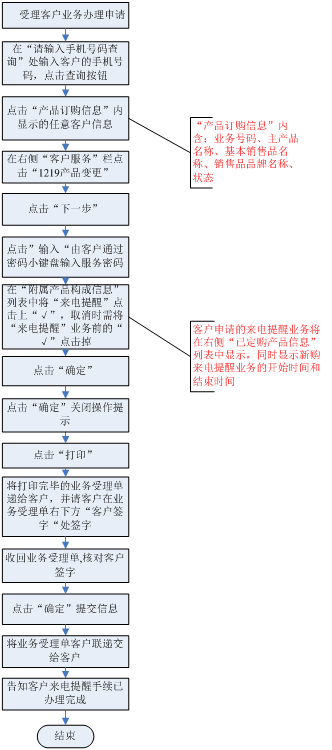
五、操作界面说明 (点击查看详细内容)特服变更-来电显示
一、业务介绍：
来电显示是指GSM数字手机在接收来电时，来电者的号码自动显示在手机屏幕上的业务。
二、注意事项：
1、来电显示按月收取时：办理当月来电显示费用按上下半月收取，如客户是下半月申请当月不取消，则当月收取半月的来电显示费；如客户是下半月申请，下半月取消，则收取整月来电显示费。
2、申请及取消在同一界面办理，申请时需在“来电显示”业务前点击上“√”，取消时需将“来电显示”业务前的“√”点击掉。
三、相关业务规范
客户凭服务密码办理。
四、操作流程图
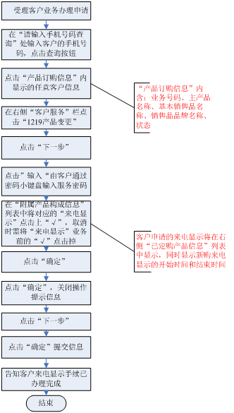
五、操作界面说明 (点击查看详细内容)特服变更-国内（不含港澳台）漫游、省内漫游
一、业务介绍：
国内（不含港澳台）漫游：实现在移动网络覆盖范围内的国内(不含港澳台)任何地区进行拨打和接听电话。
省内漫游：实现在移动网络覆盖范围内的客户归属省省内任何地区进行拨打和接听电话。
二、注意事项：
1、特服界面中有四种漫游功能，国际漫游（含港澳台，以下同）、国内漫游（不含港澳台，以下同）、省内漫游，无漫游，四种漫游功能只能单选，选择其中一项时，原来具有的漫游功能将同时被取消。选择无漫游时，客户将不具备漫游功能，仅能在归属地使用移动通信服务。
2、省内漫游、国内漫游、国际漫游级别从小到大排列，如客户已具有国内漫游功能（特服界面中显示国内漫游已开通），则该客户同时具有省内漫游功能。同理，如客户已具有国际漫游功能，在国际漫游功能有效期内，将同时具有国内漫游及省内漫游功能。
4、国际漫游特服到期自动取消，系统将自动默认开通国内漫游；如客户在国际漫游特服未到期前到营业厅取消，需根据客户需求直接为客户办理其他漫游特服选项。
5、客户在营业前台办理漫游业务时，营业员根据客户需求，为客户选择相应的漫游功能。客户通过电子渠道（短信营业厅、10086等）取消漫游功能后，系统将自动为客户开通下一档漫游功能。
6、申请及取消在同一界面办理，申请时需在“全国漫游”或“省内漫游”业务前点击上“√”，取消时需将“全国漫游”或“省内漫游”业务前的“√”点击掉。
三、相关业务规范
客户凭服务密码办理
四、操作流程图
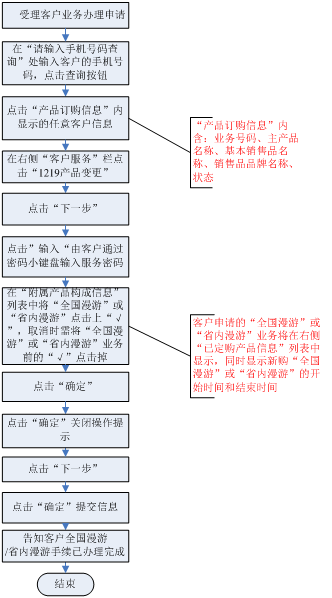
五、操作界面说明 (点击查看详细内容)特服变更-三方通话
一、业务介绍：
三方通话即多方通话，最多可支持六方同时通话。由客户A发起多方通话，客户A先与客户B建立通话，保持与B的通话，与客户C建立通话，再通过手机菜单操作，另C加入会议电话，此时A、B、C可同时通话。依此类推，可逐次与D、E、F建立通话，并加入会议电话。A可单独与B、C、D、E、F中的一个通话，而保持其他的通话，也可与B、C、D、E、F同时通话。
二、注意事项：
1、在使用多方通话功能前，需要在营业厅或拨打客户服务热线申请此项功能。
2、如不激活呼叫等待功能，发起会议电话时，第一个呼叫可作主叫，亦可作被叫，其他呼叫只能作主叫。
3、资费标准：
（1）月功能使用费10元/月，具体执行标准见地市公司执行标准。
（2）在使用多方通话业务时，每拨打或接听一个电话均按移动电话正常资费标准收费。处于保持状态客户由于占用信道，仍需计算通话时长。
4、使用多方通话业务时，要求客户的手机终端必须支持此项业务。
5、申请及取消在同一界面办理，申请时需在“三方通话”业务前点击上“√”，取消时需将“三方通话”业务前的“√”点击掉。
三、相关业务规范
客户凭服务密码办理。
四、操作流程图
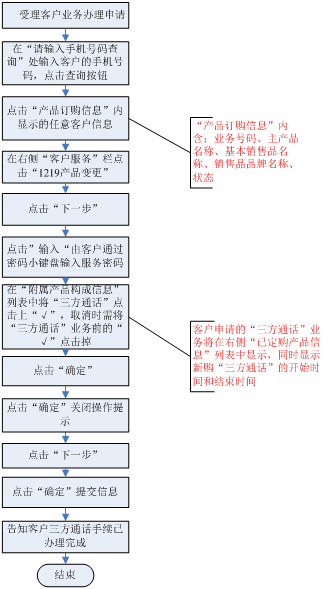
五、操作界面说明 (点击查看详细内容)特服变更-语音信箱
一、业务介绍：
语音信箱是指客户可以在手机上设置呼叫转移至语音信箱，客户手机由于正在通话、无人接听、关机或不在服务区内等原因而未能及时接听来电时，由呼叫前转功能将来电转接到被叫客户的语音信箱，将来电者的原声储存起来，系统按照被叫客户设置的呼出策略，进行呼出通知被叫客户有新留言。被叫客户也可以拨打特定的接入码13800451166，收听自己邮箱的留言和管理邮箱。
呼出策略包括：短信和语音两种。
二、注意事项：
1、默认的呼出策略为短信方式。
2、客户语音信箱的录音时长不能超过40秒、最多同时存10条语音留言，每条留言保留48小时。
3、申请及取消在同一界面办理，申请时需在“语音信箱”业务前点击上“√”，取消时需将“语音信箱”业务前的“√”点击掉。
4、语音信箱标准资费为：
（1）月功能使用费最高为5元/月，具体执行标准见地市公司执行标准。
（2）短信通知免费。
（3）呼叫前转进入信箱的，主叫按正常资费标准收取费用，被叫方（即呼转方）按呼转费用正常收取 ，基本呼转费0.20元/分。
（4）拨打13800451166，提取留言或信箱管理时，主叫按正常资费标准收取费用。
三、相关业务规范
凭服务密码办理。
四、操作流程图
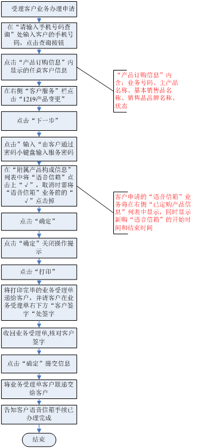
五、操作界面说明 (点击查看详细内容)